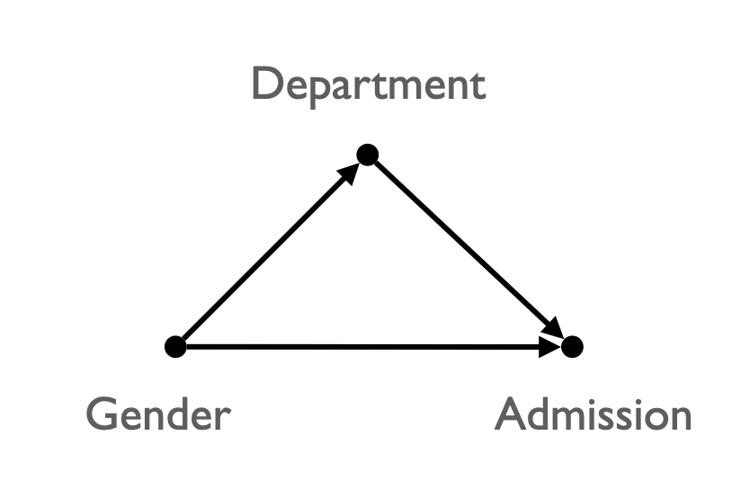
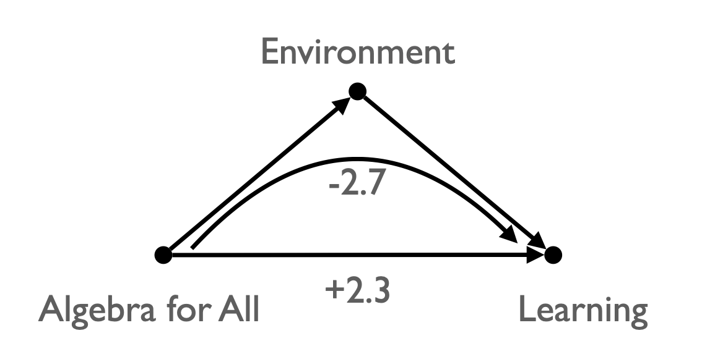
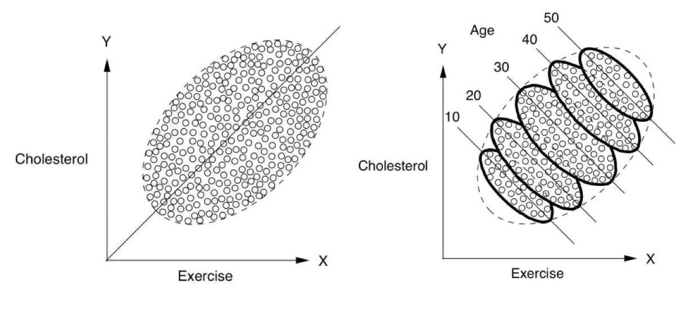
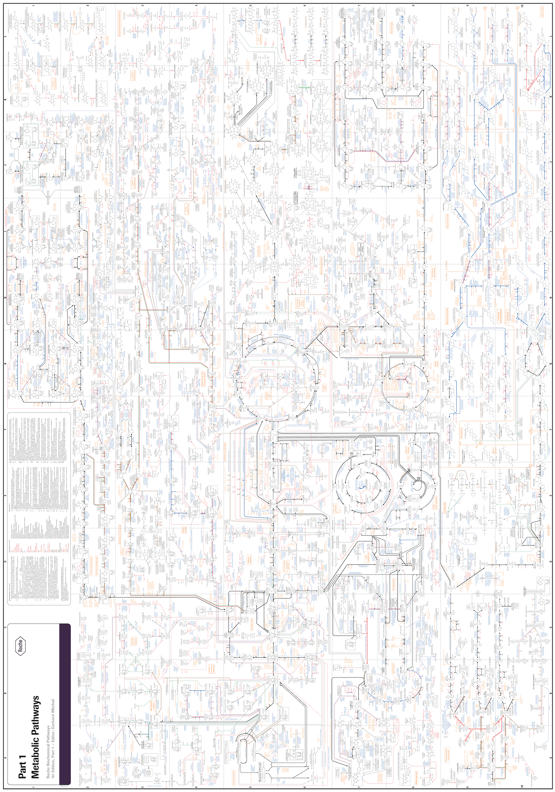

Causal Inference
The Third Camp: Causal Inference
Data is a window, not a mirror to reality!
인과 추론을 향한 고군분투
담배는 폐암의 원인인가?
- 1950년 ~ 1964년 미국에서 의사, 역학자, 통계학자 사이의 큰 논쟁
- 통계적으로 입증할 수 있는가? 실험군-대조군의 실험적 방법론 이외의 다른 방법이 있는가?
- 교란(confounding) 변수가 전혀 존재하지 않는다는 것을 입증할 수 있는가?; 흡연 유전자, 흡연자의 라이프스타일, 흡연자의 주위 환경 등
- US Surgeon General이 임명한 특별 자문위원회의 고민 (1964)
위원회는 보고서를 위해 1년 이상 노력했고, 주요 문제 중 하나는 “원인”이라는 단어의 사용이었습니다. 위원회 위원들은 19세기의 결정론적 인과성 개념을 제쳐두어야 했고, 통계도 제쳐두어야 했습니다. (아마도 코크런이) 보고서에 적었듯이, “통계적 방법은 연관성에서 인과 관계를 증명할 수 없습니다. 연관성(association)의 인과적 유의성(causal significance)은 통계적 확률에 대한 진술을 넘어서는 판단의 문제입니다. 속성이나 요인과 질병 또는 건강에 미치는 영향 사이의 연관성의 인과적 중요성을 판단하거나 평가하려면 여러 가지 기준을 사용해야 하며, 그 중 어느 것도 판단의 충분한 근거가 될 수 없습니다.”
“Statistical methods cannot establish proof of a causal relationship in an association. The causal significance of an association is a matter of judgment which goes beyond any statement of statistical probability. To judge or evaluate the causal significance of the association between the attribute or agent and the disease, or effect upon health, a number of criteria must be utilized, no one of which is an all-sufficient basis for judgment.”
Source: The Book of Why: The New Science of Cause and Effect by Judea Pearl, Dana Mackenzie (2018)
임산부의 흡연은 저체중아의 생존에 이로운가?
Birth-weight Paradox
- 1960년대 중반, Jacob Yerushalmy의 논문
- 이미 여러 연구에서 흡연자 아기가 출생 시 체중이 더 가볍다는 것이 밝혀졌음; 저체중은 영아사망율을 높임
- 저체중아 중, 어머니가 흡연자인 경우 생존율이 더 높았음!
- 논문이 발표된 지 40년이 넘은 2006년까지 만족스럽게 설명되지 않았음
- 흡연자 대신 흑인으로 대체해도 같은 현상을 발견
- 의학에서 비슷한 패러독스가 자주 발견됨; 예. 당뇨 환자의 경우 비만이 생존에 이득이 되는 것처럼 나타남.
Source: The Book of Why: The New Science of Cause and Effect by Judea Pearl, Dana Mackenzie (2018)
학과별로 공정해도 대학은 차별할 수 있을까?
UC Berkeley Admission Paradox
- 1973년, 대학원에 진학한 남성과 여성의 합격 비율이 각각 44%, 35%였음
- 입학 결정은 학과별로 독립적으로 내렸음
- 학과별로는 여성의 합격 비율이 더 높았음!; 남성에 대한 역차별이 나타났음
- Peter Bickel(버클리대의 통계학자)와 William Kruskal(시카고대의 통계학자) 사이의 논쟁(해결하지 못한채 2005년 사망)
- 학과별로 나누어 살펴보는 것으로 충분한가?
- 어느 주 출신인지에 따른 차별까지 존재한다면 학과별로 나눠보는 것은 더 큰 오류를 발생시킬 수 있음
- 즉, 두 요인을 모두 고려하면 다시 여성에 대한 차별이 있는 것으로 결론 날 수 있음.
- 무분별한 편견(bias)이 양산되는 방식에 대한 전형적인 예시로 볼 수 있음
- 편견(bias): associational 개념 - 관찰된 연관성에 대한 인식
- 편견/편향은 인지적 부하없이(깊이 생각할 필요없음) 빠르게 대응할 수 있는 인지체계로 생존에 적응적으로 여겨짐.
- 동물들의 무의식적/진화적 혐오까지도 포함
- 단, 편견에 대한 비판의 원인은
- 분포를 고려하지 않는 이분적인 태도
- 편의적으로 인과관계를 추론하는 경향
- 편견/편향은 인지적 부하없이(깊이 생각할 필요없음) 빠르게 대응할 수 있는 인지체계로 생존에 적응적으로 여겨짐.
- 차별(discrimination): causal 개념 - 변화가 발생되도록 개입
- 편견(bias): associational 개념 - 관찰된 연관성에 대한 인식

Source: The Book of Why: The New Science of Cause and Effect by Judea Pearl, Dana Mackenzie (2018)
효과는 없었으나 성공적인 정책?
- 1990년대 최악의 시카고 공립학교의 개혁 정책
- 고1에서 보충 과목을 없애고, 대학 진학 준비 과목을 수강하도록 함.
- 이 중 대수 1 과목(“Algebra for All”)의 경우 3년 간 유의한 성적 개선이 없었음.
- Guanglei Hong(시카고대 인간발달)은 정책의 직접적 효과는 존재한다고 판별했음!
- 정책이 두 가지 방식으로 (다른 방향으로) 작용했음.
- 이후 “Double-Dose Algebra”으로 개선했음.

간략한 역사적 배경
- 정의, 인식 가능성, 필연성
- 다중 원인, 상호작용
- 시간적 순서성, 인과의 피트백
- 결정론적 vs. 확률론적
The Grammar of Science (1892), by Karl Pearson
특정 시퀀스가 과거에 발생하고 반복되었다는 것은 경험의 문제이며, 인과라는 개념 안에서 그렇게 표현합니다. 미래에도 계속 반복될 것이라는 것은 신념의 문제이며, 확률이라는 개념 안에서 그렇게 표현합니다. 과학은 어떤 경우에도 시퀀스에 내재된 필연성을 입증할 수 없으며, 시퀀스가 반드시 반복되어야 한다는 것을 절대적으로 확실하게 증명할 수도 없습니다. 과거에 대한 과학은 묘사이고 미래에 대한 과학은 믿음입니다;
That a certain sequence has occurred and recurred in the past is a matter of experience to which we give expression in the concept causation; that it will continue to recur in the future is a matter of belief to which we give expression in the concept probability. Science in no case can demonstrate any inherent necessity in a sequence, nor prove with absolute certainty that it must be repeated. Science for the past is a description, for the future a belief; (Pearson, 1892, p. 113).
인과 관계라는 개념은 현상에서 개념적 과정을 통해 추출된 것으로, 논리적 필연도 아니고 실제 경험도 아닙니다…. 우주에 대한 더 넓은 관점에서보면 모든 현상은 상관관계로서 보이지만, 인과적으로는 관계하지 않는 것으로 보입니다.
the idea of causation is extracted by conceptual processes from phenomena, it is neither a logical necessity, nor an actual experience…. The wider view of the universe sees all phenomena as correlated, but not causally related. (Pearson, 1892, p. 177)
- 피어슨은 인과관계를 분석의 언어에서 배제시키고, 이후 그 전통이 통계학에서 어어짐
- Positivism(실증주의)
- 인과관계에서 “힘”, “필연성” 등과 같은 관찰 불가능한 형이상학적 요소를 제거하고, 오직 관찰 가능한 현상 간의 관계만을 인정
- 오직 관찰된 패턴만을 반영할 수 있으며, 반복적인 규칙성(regularity of succession)을 통해 상관관계(correlation/association)로 설명될 수 있음
- 경험주의 철학의 대표격인 흄(David Hume)의 철학적 영향을 받음: 인과관계를 “항상적 연접(constant conjunction)”으로 이해. 즉, 인과는 두 사건 사이의 필연적 연결이 아니라 단지 한 사건이 다른 사건 뒤에 규칙적으로 발생하는 패턴의 (심리적, 인지적) 구성물
- 그렇다면, 과학에서 인과문제는?
- why의 문제를 how의 문제로 대수적 방정식/함수관계를 통해 대체했음
- 가령, F=ma에서 1kg의 정지된 물체를 30m/s의 속도까지 10초 안에 가속시키려면 어떻게 해야 하는가(얼마의 힘이 필요한가)?
- 콩트(Comte)는 갈릴레이와 마찬가지로 형이상학적 질문에서 탈피하고 현상들의 (일반적) 관계에 대해서만 초점을 맞추는 것이 과학 혁명이 성공할 수 있는 본질이라고 봄.
- 극단적으로 why의 문제는 how의 문제로 귀속된다고까지 주장함; 정확한 말을 아니지만 why의 본질을 담고 있음.
- why의 문제를 how의 문제로 대수적 방정식/함수관계를 통해 대체했음
인간 진보의 과정이 신학적 상태 (theological state) > 형이상학적 상태 (metaphysical state) > 실증적 상태 (positive state)로 나아간다는 논의에서 최종 상태인 실증적 상태에 대하여…
최종적인 실증적 상태에서, 마음은 절대적 개념, 우주의 기원과 목적지, 그리고 현상의 원인에 대한 헛된 탐구를 포기하고, 그것들의 법칙, 즉 그들의 불변적 연속 및 유사성 관계(invariable relations of succession and resemblance)의 연구에 전념합니다. 적절히 결합된 추론과 관찰이 이러한 지식의 수단입니다. 현재 우리가 사실의 설명(explanation)에 대해 언급할 때 이해되는 것은 단순히 개별 현상과 일반적 사실들 사이의 연결을 확립하는 것이며…
무게(weight)와 인력(attraction)이 무엇인지에 대해서는, 우리는 그것과는 아무 상관이 없습니다. 왜냐하면 그것은 전혀 지식의 문제가 아니기 때문입니다. 신학자들과 형이상학자들은 그러한 질문들에 대해 상상하고 정제할 수 있습니다; 그러나 실증적 철학은 그것들을 거부합니다.
푸리에는 열(heat)에 관한 그의 훌륭한 일련의 연구에서, 그의 선배들이 열성 물질과 보편적 에테르의 작용에 대해 논쟁했을 때와는 달리, 한 번도 그 본질에 대해 질문하지 않고 열 현상의 가장 중요하고 정확한 법칙들과 많은 크고 새로운 진리들을 우리에게 제공했습니다.
Comte, Auguste. The positive philosophy of Auguste Comte. Blanchard, 1858.
Sewall Wright
- Path diagrams라는 데이터로부터 인과 관계에 대한 질문에 답하는 수학적 방법을 최초로 개발
- 실제로 인과 분석의 툴로 이어지지는 못하였고,
- Path analysis(경로 분석)이라는 통계 기법으로 어어졌으나 뿌리 깊은 오해의 씨앗이 되었음.
기니피그의 털색에 영향을 미치는 요인을 설명하는 경로 다이어그램. D = 발달 요인(수태 후, 출생 전), E = 환경 요인(출생 후), G = 각 개별 부모의 유전적 요인, H = 부모 모두의 유전적 요인을 합친 것, O, O′ = 자손. 분석의 목적은 D, E, H의 영향력을 추정하는 것(다이어그램에서는 d, e, f로 표기)
from Wikipedia

Path Analysis

(다음은 수업 후 추가된 내용으로 참고만 하세요.)
보통, 추상적인 개념적 단위인 구성개념(construct)를 수량화하기 위해 사용되는 변수를 잠재변수(latent variable)라고 함.
관측된 변수가 아닌 이 잠재변수들로 모델링; \(Y = f(X)\)
여러 개의 선형 모형이 나타남으로 동시에 여러 개의 \(Y = f(X)\) 형태의 방정식을 얻게 되고,
이를 (잠재변수) 구조방정식모형((latent variable) structural equation model, SEM)이라고 함. (또는 latent variable path model)
잠재변수의 예로 독해력이라는 구성개념을 수량화하고자 하는 경우,
다음과 같이 독해력을 3가지 문항으로 측정하는 예를 생각해볼 수 있음.
- 테스트 1: 참가자가 글을 읽고, 해당 글을 가장 잘 설명하는 그림을 4개의 선택지 중에서 선택.
- 테스트 2: 참가자가 지시문을 읽고, 그 지시에 따라 행동을 실행 (예: “일어서서 테이블 주위를 걷고, 다시 앉으세요”).
- 테스트 3: 참가자가 단어나 문장이 빠진 글을 읽고, 글의 의미를 바탕으로 빠진 단어나 문장을 채움.
독해력과는 별개로 추가로 측정되는 능력이 다음과 같이 존재할 수 있음; unique variance
- 테스트 1: 읽은 내용을 시각적 이미지로 변환하는 능력.
- 테스트 2: 읽은 내용을 행동으로 옮기는 능력.
- 테스트 3: 자신의 지식에서 가장 적합한 단어나 문장을 선택해 글에 삽입하는 능력.
아래 그림에서 세 가지 독해력 검사에서 개인의 점수(test 1, test 2, test 3)는 “진정한 독해력”(구성개념), 오차(error), 각 검사의 고유한 특성에 의해 영향을 받는다는 가정을 나타냄.
- 통계적으로 잠재 변수를 요인(factor)이라고도 부르며, 통계의 요인 분석(factor analysis)을 통해 얻어질 수 있음.
- 이는 실제 측정된 변수들이 공통적으로 공유할 것으로 가정되는 요인을 추출하는 프로세스라고 볼 수 있으나,
- 구성개념을 수치화하는 이런 방식에 대한 반론이 있으며, “구성 개념을 수량화”하기 위한 다른 대안들이 제안되고 있음
- 가령, 사회경제적 지위(socioeconomic status, SES)와 같은 구성개념의 통계적 수량화에 의문이 제기되어 왔음.
Causal Revolution
Source: The Book of Why: The New Science of Cause and Effect by Judea Pearl, Dana Mackenzie (2018)
사람들은 어떻게 인과성에 대한 지식을 얻게 되는가?
어떤 경험 패턴이 이 연관성을 “인과적”이라고 확신시키는가?
Association
- 관찰을 기반으로 규칙성 발견하고 예측
- 올빼미가 쥐의 움직임을 관찰하고 잠시 후 쥐가 어디에 있을지를 파악
- 컴퓨터 바둑 프로그램이 수백만 개의 바둑 게임 데이터베이스를 연구하여 어떤 수와 승률이 높은지 알아내는 것
- 하나의 이벤트를 관찰하면 다른 이벤트를 관찰할 가능성이 달라진다면, 하나의 이벤트가 다른 이벤트와 연관되어 있다고 말할 수 있음
- “치약을 구매한 고객이 치실도 구매할 가능성이 얼마나 되는가?”; \(P(치실 ~| 치약~)\)
- 통계의 핵심: 상관관계, 회귀
- 올빼미는 쥐가 왜 항상 A 지점에서 B 지점으로 가는지 이해하지 못해도 훌륭한 사냥꾼이 될 수 있음
- 위스키 한 병을 들고 있는 보행자가 경적을 울릴 때 다르게 반응할 가능성이 있다는 것을 기계가 스스로 파악할 수 있는가?
- Association 단계의 한계: 유연성과 적응성의 부족
Intervention
- 관찰을 넘어, 세상에 대한 개입
- “치약 가격을 두 배로 올리면 치실 판매량은 어떻게 될까?”
- 데이터에는 없는 새로운 종류의 지식을 요구
- 통계학의 언어로는 이 질문을 표현하는 것조차 불충분함
- 수동적으로 수집된 데이터만으로는 이러한 질문에 대답할 수 없음
- 과거의 데이터를 이용하면?
- 과거에 가격이 두 배 비쌌을 때의 치실 판매량으로 추론?
- 이전에 가격이 두 배 비쌌을 때 다른 이유가 있었을 수 있음
- 인과 관계를 파악하기 위해 전통적으로 실험을 통해 해결; 예. 테크 기업들의 실험들
- 정확한 인과 관계 모델이 있으면 관찰 데이터만으로도 가능; \(P(치실 ~| ~do(치약~))\)
- 사실, 일상 생활에서 항상 개입을 수행해서 그 관계/효과를 이해: 어떻게(How) 하면 두통이 사라질까?
Counterfactuals
- 두통이 사라졌다면 왜(Why) 그럴까?
- 약을 먹지 않았어도 두통이 사라졌을까?: 가상의 세계 (counterfactual world)
- 나는 왜 탈락했을까? 내가 여자라면 합격했을까?
- “현재 치약을 구매한 고객이 가격을 두 배로 올려도 여전히 치약을 구매할 확률은 얼마인가?”
- 우리는 현실 세계(고객이 현재 가격으로 치약을 구매했다는 것을 알고 있는)와 가상의 세계(가격이 두 배 높은 경우)와 비교
- 보이는 세계 볼 수 있는 새로운 세계 볼 수 없는 세계(보이는 것과 모순)
- 이를 위해서는 “이론” 또는 “자연의 법칙”이라고 볼 수 있는 근본적인 인과 과정의 모델이 필요
- Individual Treatment Effect: \(\tau_i \equiv Y_i(1) - Y_i(0)\): the fundamental problem of causal inference
- Average Treatment Effect: \(\tau \equiv E[Y_i(1) - Y_i(0)] = E[Y_i(1)] - E[Y_i(0)]\): 여러 관측치(데이터)를 이용해 (노이즈를 제거하면서) 최적의 인과효과를 추정
| \(i\) | \(T\) | \(Y\) | \(Y(1)\) | \(Y(0)\) | \(Y(1) - Y(0)\) |
|---|---|---|---|---|---|
| 1 | 0 | 0 | 0 | ? | |
| 2 | 1 | 1 | 1 | ? | |
| 3 | 1 | 0 | 0 | ? | |
| 4 | 0 | 1 | 1 | ? | |
| … | … | … | … | … | ? |
인과 모델은 실제 개입(intervention) 없이도 가상의 상황에서 어떻게 되리라고 예측할 수 있는 추론(reasoning)의 능력을 가능하게 함: deep understanding
- 달이 사라진다면?
- 경험/관찰한 적이 없는 상황에 대해서도 예측할 수 있음
- 유연하고 적응적인 행동을 가능하게 함
ML에서도, 인과 모델이 있다면 작은 데이터로 학습해도 빠르게 올바른 예측을 할 수 있음.
사람이 몇 번의 경험으로만으로 운전, 요리 등을 학습할 수 있는 이유도 비슷하다고 볼 수 있음.
전형적인 인과적 질문들
- How effective is a given treatment in preventing a disease?
- Was it the new tax break that caused our sales to go up? Or our marketing campaign?
- What is the annual health-care costs attributed to obesity?
- Can hiring records prove an employer guilty of sex discrimination?
- I am about to quit my job, will I regret it?
- 특정 치료법이 질병 예방에 얼마나 효과적일까요?
- 새로운 세금 감면 혜택이 매출 상승의 원인이었을까요? 아니면 마케팅 캠페인 때문이었나요?
- 비만으로 인한 연간 의료 비용은 얼마인가요?
- 채용 기록으로 고용주의 성차별을 입증할 수 있나요?
- 직장을 그만두려고 하는데 후회하게 될까요?
Structural Causal Model(SCM)
개입(intervention)의 과학을 위한 인과를 표현하기 위한 새로운 수학적 언어가 요구됨!
| 관찰(seeing) | 개입(doing) | |
|---|---|---|
| 잔디가 젖었다는 것을 보았을 때(see) 비가 내렸을 가능성은 얼마인가? | 잔디를 젖게 하면(doing) 비가 내릴 가능성은 얼마인가? | |
| \(P(~rain~ | ~wet~)\) | \(P( ~rain~ | ~do(wet)~)\) |
- 물리학의 법칙도 소위 “방정식”으로 표현되었음; 방정식의 대칭성으로 인과적 모형으로 표현되지 못함
- 인과의 문제를 현상 간의 관계에 대한 법칙으로 전개(why → how)
- \(F = m*a\)
- \(a = \frac{F}{m}\)
- \(m = \frac{F}{a}\)
- 인과의 문제를 현상 간의 관계에 대한 법칙으로 전개(why → how)
- 통계학은 확률이라는 수학적 언어로 표현되어 개입의 효과를 표현할 방법이 없음
- “잔디가 젖어 있으면, 비가 왔다”와 “이 스프링클러를 켜면, 잔디가 젖을 것이다”라는 정보가 주어지면,
- 컴퓨터는 “이 스프링클러를 켜면, 비가 왔다”라고 결론 내릴 것임.
Directed acyclic graph (DAG): 인과 관계 다이어그램
Source: Causality: Models, Reasoning, and Inference (2000) by Judea Pearl
Confounding
신발을 신고 잠든 다음날 두통이 생긴다면?
Fork:Common Cause
Source: Introduction to Causal Inference (ICI) by Brady Neal
미모가 뛰어나면 연기력이 떨어지는가?
Collider: Common Effect

일반적으로, 표면적으로 드러난 변수간의 관계가 숨겨진 다른 변수들(lurking third variables)의 영향으로 진실한/인과적 관계가 아닌 경우, confounding 혹은 confounder가 존재한다고 함.
극단적이지만 이해하지 쉬운 예로는
- 초등학생 발 사이즈 → 독해력?
- 머리 길이 → 우울증?

Simpson’s paradox
아래 첫번째 그림은 집단 전체에 대한 플랏이고, 두번째 그림은 나이대별로 나누어 본 플랏
전체 집단을 보면 운동을 많이 할수록 콜레스테롤이 증가하는 것으로 보이나,
나이대별로 보면, 상식적으로 운동이 긍정적 효과가 나타남.
왜 그렇게 나타나는가?

Source: The book of why by Judea Pearl
Confounding의 예시들
위에서 다룬 역사적 사건들을 참고
그 외 흥미로운 예시들
COVID-27
Source: Introduction to Causal Inference (ICI) by Brady Neal
일종의 Simpon’s paradox


코딩 기술이 뛰어나면 협업능력이 떨어지는가? (Collider Bias)
어느 회사에서 지원자의 코딩 능력과 협업 능력을 1점부터 5점까지 정량화하여,
총점 8점 이상을 받은 지원자를 모두 채용한다고 했을 때,

Selection Bias
수집된 데이터의 특성에 따라 인과추론을 방해하거나(confounding)
일반화할 수 있는 대상의 범위가 제한됨
- 노인에 관한 데이터: 누가 사망했는가?
- Survival bias: 일종의 collider bias
- 예를 들어, 비만이 사망율에 미치는 효과에 대한 과소추정
- 의료 분야에서 발견되는 패러독스
- 비만은 당뇨 환자의 생존에 이익이 되는가?
- 과거 기록을 이용?; 수녀들의 자서전 연구
- 추적조사/종단연구(longitudinal study)
- 회사 구성원에 대한 조사: 근속년수에 따른 샘플 속성의 변화
- 누가 참여(안)했는가? 어떤 방식으로 참여했는가?
- 관측되지 않은 데이터: 어떤 사람/대상이 왜 누락되었는가?
- 어떤 사람들이 설문/실험에 참여했는가? 혹은 어떤 문항에 응답했는가?/하지 않았는가?
- 어떤 유저들의 데이터인가? 가령, SNS의 기록은 누가 남기는가?
- 코호트/특정세대의 특성: 그들만의 특성인가?
Abraham Wald: “Where are the missing holes?”

{kind=link}
Experiments
- 개입없이 수동적으로 얻은 관찰 데이터의 분석에서는 항상 confounding이 존재할 기능성이 있음
- 결정적인 인과관계를 파악하기 위해, 전통적으로 “통계학”의 시각에서 인과문제를 해결하기 위해 RCT (randomized controlled trial)라고 부르는 소위 gold standard한 실험 연구를 통해서 해결하고자 했음
- 개념적으로는 “물리적 통제”라고 볼 수 있음; vs. “통계적 통제”
- 두 그룹으로 집단을 randomly assign(무선/무작위 배정/할당): 모든 면에서 동질한 성향을 가짐. 예를 들어, 두 집단의 연령이 평균적으로 동일해짐.
- 분야마다 효과를 제대로 검증하기 위한 많은 실험 설계들이 발전되었음; 연구방법론

예를 들어, 걷기가 사망율에 미치는 효과를 검증하려면, 가령 600명을 300명씩 두 그룹으로 무작위로 나눈 후 한쪽은 1마일 이하를 걷도록 하고 나머지는 2마일 이상을 걷게 한 후 12년 후 사망율을 확인해야 함.
하지만, 실험 연구는 자체로 많은 한계를 지님
- 많은 경우 실험이 불가능하거나 완전한 통제가 어려움
- 실험에서 처치한 구체적인 상황에서만 유효하고; 어느 지형을 어느 속도로 누구와 어떻게 걸었는지에 대한 실험 통제하에서
- 따라서 그 효과 또한 일반화되어 표현하기 어려움
- 반대로, 덜 통제된 실험의 경우 어떤 요인의 효과인지 불분명
- 완전한 통제를 할수록 더 인위적인 상황이 연출됨; 자연스러운/현실적인 상황에서 적용된다는 보장이 없음
- 실험 참여자는 어떻게 왜 참여한 것인가?
Humility
아인슈타인은 한번 우주를 순전히 물리적 용어로 이해할 수 있을 것이라고 생각하는지 질문을 받았습니다. 그는 “음, 그럴 수도 있지만, 이것은 베토벤 교향곡을 음표(notes)의 주파수 분포(frequency distribution)로 이해하려는 것과 같을 것입니다.”
Roche Biochemical Pathways, 4th Edition 
Source: How life works: a user’s guide to the new biology by Philip Ball
Quotes from Einstein
우리가 경험할 수 있는 가장 아름다운 감정은 신비감(mystical)입니다. 그것은 모든 진정한 예술과 과학의 힘입니다. 낯설게만 느낄 뿐인 이 감정들, 더 이상 경이로움(wonder)을 느끼지 못하며 황홀한 경외심(awe)을 갖지 못하는 사람은 죽은 것이나 마찬가지입니다. 우리에게 불가해한(impenetrable) 것이 실제로 존재하며, 그것이 최고의 지혜와 가장 빛나는 아름다움으로 나타난다는 것을 아는 것—우리의 둔한 능력으로는 가장 원시적인 형태로만 이해할 수 있는—이 지식, 이 느낌이 진정한 종교성의 중심에 있습니다. 이런 의미에서, 그리고 오직 이런 의미에서만, 나는 독실하게 종교적인 사람들의 대열에 속합니다.
The most beautiful emotion we can experience is the mystical. It is the power of all true art and science. He to whom this emotion is a stranger, who can no longer wonder and stand rapt in awe, is as good as dead. To know that what is impenetrable to us really exists, manifesting itself as the highest wisdom and the most radiant beauty, which our dull faculties can comprehend only in their most primitive forms—this knowledge, this feeling, is at the center of true religiousness. In this sense, and in this sense only, I belong to the rank of devoutly religious men.
Quote: WHAT I BELIEVE, FORUM AND CENTURY 84 (OCTOBER 1930), NO. 4, 193-194; EINSTEIN 1954, 8-11
과학적 연구는 일어나는 모든 일이 자연법칙에 의해 결정된다는 개념에 기초하고 있으며, 따라서 이는 사람들의 행동에도 적용됩니다. 이러한 이유로, 연구 과학자는 기도, 즉 초자연적 존재에게 전달되는 소원에 의해 사건이 영향을 받을 수 있다고 믿기 어렵습니다. 그러나 이러한 법칙에 대한 우리의 실제 지식이 불완전하고 단편적일 뿐이라는 것을 인정해야 합니다. 그래서 사실, 자연에 모든 것을 포괄하는 기본 법칙이 존재한다는 믿음도 일종의 믿음(faith)에 기초하고 있습니다. 그럼에도 불구하고 이러한 믿음은 지금까지 과학적 연구의 성공에 의해 크게 정당화되어 왔습니다. 하지만, 다른 한편으로는, 과학을 진지하게 추구하는 모든 사람은 우주의 법칙 속에 영(spirit)이 나타난다는 확신을 갖게 됩니다—인간의 영보다 훨씬 우월한 영이며, 우리는 우리의 미약한 능력으로 그 앞에서 겸손함을 느껴야 하는 영입니다. 이런 방식으로 과학의 추구는 특별한 종류의 종교적 감정으로 이어지며, 이는 실제로 더 순진한(naive) 사람의 종교성과는 상당히 다릅니다.
Scientific research is based on the idea that everything that takes place is determined by laws of nature, and therefore this holds for the actions of people. For this reason, a research scientist will hardly be inclined to believe that events could be influenced by a prayer, i.e. by a wish addressed to a supernatural being. However, it must be admitted that our actual knowledge of these laws is only imperfect and fragmentary, so that, actually, the belief in the existence of basic all-embracing laws in nature also rests on a sort of faith. All the same this faith has been largely justified so far by the success of scientific research. But, on the other hand, everyone who is seriously involved in the pursuit of science becomes convinced that a spirit is manifest in the laws of the universe—a spirit vastly superior to that of man, and one in the face of which we with our modest powers must feel humble. In this way the pursuit of science leads to a religious feeling of a special sort, which is indeed quite different from the religiosity of someone more naive.
Quote: Einstein, A., Hoffmann, B., & Dukas, H. (2013). Albert Einstein, the human side: glimpses from his archives. Princeton University Press, pp. 32-33.
Life is just a machine? Geoffrey Hinton, DeepMind